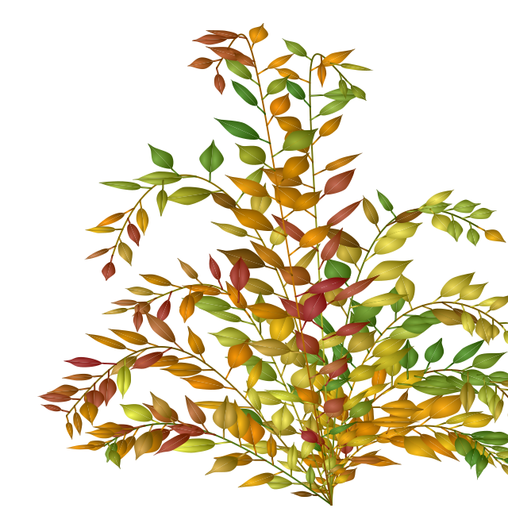

Create an svg file with benjamini leaves
Source:vignettes/create_benjamini_svg.Rmd
create_benjamini_svg.RmdLet’s have a look how we can be generate svg files with benjamini leaves. First we’ll load some libraries.
library(ggbenjamini)
library(dplyr)
library(purrr)
library(tidyr)
library(ggplot2)
library(stringr)
library(minisvg)
library(prismatic)
set.seed(21)We’ll use the package example dataframe
df_bezier_skeleton with the bezier paths of a “hand drawn”
(with inkscape) svg file ressembling the skeleton a of a plant like
structure (see vignette("import_svg_bezier") if you’re
interested how to import svg file beziers) and directly grow leaves on
these “branches”:
df_branches_and_leaves <- df_bezier_skeleton %>%
group_by(i_branch) %>%
summarise(benjamini_branch(
df_branch = tibble(x, y),
leaf_size_multiplicator = 0.5,
leaf_mean_dist_approx = 20,
leaf_angle_dist = spark_norm(mean = 0, sd = 15)
))
#> Warning: Returning more (or less) than 1 row per `summarise()` group was deprecated in
#> dplyr 1.1.0.
#> ℹ Please use `reframe()` instead.
#> ℹ When switching from `summarise()` to `reframe()`, remember that `reframe()`
#> always returns an ungrouped data frame and adjust accordingly.
#> Call `lifecycle::last_lifecycle_warnings()` to see where this warning was
#> generated.Now we can add columns path_str with this “d” element
and furthermore, we’ll define different fill_colors for the
varyous types of elements and transform these to svg path
strings:
get_svg_bezier_string <- function(bezier_df) {
bezier_df %>%
group_by(i_part) %>%
slice(-1) %>%
summarise(cb = paste(x, y, sep = ",", collapse = " ")) %>%
pull(cb) %>%
paste("C", ., collapse = " ") %>%
# paste("Z") %>%
paste0("M ", bezier_df$x[1], ",", bezier_df$y[1], " ", .)
}
size <- 640
pal <- c(
"#faff5a", "#b65151", "#de9602", "#ff980b",
"#fdd021", "#5c9e3f", "#fef266", "#925e16"
)
palhex <- scales::gradient_n_pal(colours = pal)
coord_intervals_lengths <- df_branches_and_leaves %>%
ungroup()%>%
summarise(
x = range(x) %>% {.[2] - .[1]},
y = range(y) %>% {.[2] - .[1]}
)
df_svg <- df_branches_and_leaves %>%
mutate(
x = x * size / coord_intervals_lengths[["x"]],
y = y * size / coord_intervals_lengths[["y"]]
) %>%
group_by(i_branch, i_leaf, element) %>%
summarise(path_str = get_svg_bezier_string(tibble(x, y, i_part))) %>%
mutate(fill_color = case_when(
element == "half 1" ~ "url(#RadialGradient3)",
element == "half 2" ~ "url(#RadialGradient4)",
element == "stalk" ~ "sandybrown",
element == "branch" ~ "brown"
)) %>%
group_by(i_branch, i_leaf) %>%
# We'll define some alchemist random distribution for the color scale later:
mutate(
fill_var = 6 *
as.numeric(i_branch) +
i_leaf +
sample(1:10, 1, TRUE)
) %>%
ungroup() %>%
mutate(hex = palhex(fill_var / max(fill_var))) %>%
mutate(
fill_gradient = factor(hex) %>%
as.numeric() %>%
paste0("url(#gradient", ., ")")
)
df_svg
#> # A tibble: 910 × 8
#> i_branch i_leaf element path_str fill_color fill_var hex fill_gradient
#> <int> <dbl> <chr> <chr> <chr> <dbl> <chr> <chr>
#> 1 1 0 branch M 417.643954… brown 7 #DBA… url(#gradien…
#> 2 1 1 half 1 M 412.930126… url(#Radi… 13 #BB5… url(#gradien…
#> 3 1 1 half 2 M 412.930126… url(#Radi… 13 #BB5… url(#gradien…
#> 4 1 1 stalk M 417.898908… sandybrown 13 #BB5… url(#gradien…
#> 5 1 2 half 1 M 426.168630… url(#Radi… 14 #B65… url(#gradien…
#> 6 1 2 half 2 M 426.168630… url(#Radi… 14 #B65… url(#gradien…
#> 7 1 2 stalk M 420.192192… sandybrown 14 #B65… url(#gradien…
#> 8 1 3 half 1 M 423.284651… url(#Radi… 14 #B65… url(#gradien…
#> 9 1 3 half 2 M 423.284651… url(#Radi… 14 #B65… url(#gradien…
#> 10 1 3 stalk M 424.327053… sandybrown 14 #B65… url(#gradien…
#> # ℹ 900 more rows
# define gradients
range_of_values <- range(df_svg$fill_var)
hex_needed <- df_svg %>%
transmute(
fill_var = fill_var - min(fill_var),
fill_var = fill_var / max(fill_var),
hex = palhex(fill_var)
) %>%
pull(hex) %>%
unique()We’re ready to create our minisvg document:
doc <- SVGDocument$new(width = size, height = size)In order to have some more realistic texture, we’ll define gradients for the leaves:
append_gradient_def <- function(
doc, id, col1 = "#00FF00", col2 = "#008000"
) {
doc$append(
stag$radialGradient(
id = id, cx="0.35", cy="0.63", r="0.7",
stag$stop(offset = "0%", stop_color = col1),
stag$stop(offset = "100%", stop_color = col2)
)
)
doc
}
hex_needed %>%
iwalk(
~append_gradient_def(
doc, paste0("gradient", .y),
.x,
clr_darken(.x)
)
)…and append them to the document:
# doc$append(gradients)Here we define helper functions to append pathes as polygons or lines to the svg:
append_polygon <- function(doc, path_str, fill_color) {
doc$append(
stag$path(
d = path_str,
fill=fill_color,
# stroke_width = "0.5",
stroke="none",
fill_opacity="1"
)
)
}
append_line <- function(doc, path_str, fill_color) {
doc$append(
stag$path(
d = path_str,
stroke_width = "2",
fill = "none",
stroke_linecap="round",
stroke=fill_color
)
)
}
append_element <- function(type, path_str, fill_color) {
switch (
type,
"half 1" = ,
"half 2" = append_polygon(doc, path_str, fill_color),
"branch" = ,
"stalk" = append_line(doc, path_str, fill_color)
)
}Now we can finally append the branches with leaves to the svg:
pwalk(list(
df_svg$element,
df_svg$path_str,
df_svg$fill_gradient
),
function(x, y, z) append_element(x, y, z)
)Et voilà
doc$show()